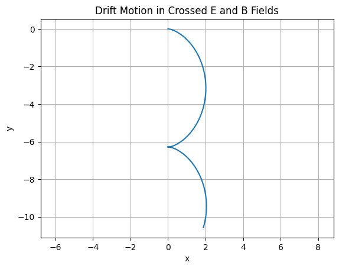
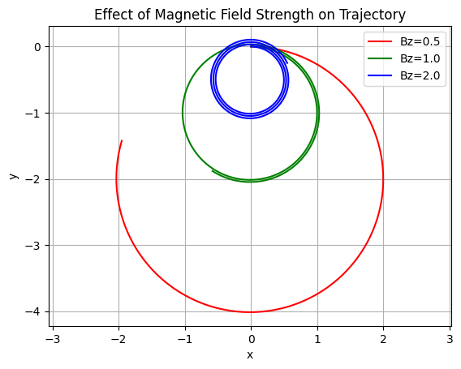
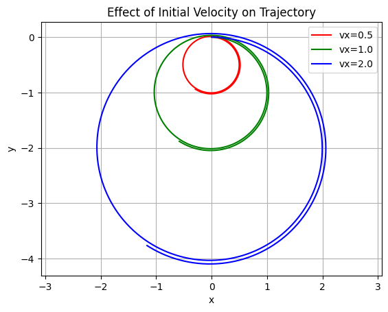

Here’s the full Markdown-formatted response for Electromagnetism – Task 1: Exploration of Applications of the Lorentz Force, including equations and real-world context.
Lorentz Force: Applications and Field Effects
The Lorentz Force Law
The motion of a charged particle in electric and magnetic fields is governed by the Lorentz force:
Where:
- \(\mathbf{F}\) is the total force on a particle,
- \(q\) is the electric charge,
- \(\mathbf{E}\) is the electric field,
- \(\mathbf{v}\) is the velocity of the particle,
- \(\mathbf{B}\) is the magnetic field.
Real-World Applications of the Lorentz Force
1. Particle Accelerators
Example: Linear Accelerators (LINACs), Cyclotrons, Synchrotrons
- Magnetic Fields: Bend particle trajectories into circular or spiral paths (centripetal force via \(\mathbf{v} \times \mathbf{B}\)).
- Electric Fields: Accelerate particles linearly between electrodes or cavities.
Lorentz Force Role: Precise control of beam paths and energies for high-energy physics experiments or cancer radiation therapy.
2. Mass Spectrometers
- Used to measure mass-to-charge ratios of ions.
- A charged particle enters a known magnetic field region and follows a circular path.
- Electric Fields: Initially accelerate the particles.
- Magnetic Fields: Separate ions by deflection radius.
Lorentz Force Role: Enables measurement of molecular masses and chemical identification.
3. Plasma Confinement in Fusion Reactors
Example: Tokamaks and Stellarators
- Plasmas consist of ionized gases with free electrons and ions.
- Strong magnetic fields confine and stabilize plasma motion using helical paths.
Lorentz Force Role: Maintains confinement by continuously forcing the charged particles to spiral, reducing loss to reactor walls.
4. Auroras and Space Physics
- Solar wind (charged particles) interacts with Earth’s magnetic field.
- Particles spiral along field lines toward poles, collide with atmospheric molecules → aurora borealis/australis.
Lorentz Force Role: Determines particle trajectories in Earth's magnetosphere.
5. Cathode Ray Tubes (CRTs)
- Electrons accelerated by electric fields and steered by magnetic fields.
- Found in old TVs and oscilloscopes.
Lorentz Force Role: Directs beam to desired screen location for image creation.
The Role of \(\mathbf{E}\) and \(\mathbf{B}\) in Particle Motion
| Field Type | Effect on Charged Particles |
|---|---|
| Electric Field \(\mathbf{E}\) | Accelerates particles along the field direction. Linear force: \(\mathbf{F}_E = q\mathbf{E}\). |
| Magnetic Field \(\mathbf{B}\) | Deflects moving particles in circular or helical paths. Perpendicular force: \(\mathbf{F}_B = q\mathbf{v} \times \mathbf{B}\). |
| Crossed Fields \(\mathbf{E} \perp \mathbf{B}\) | Produces cycloidal motion or E×B drift, used in devices like velocity selectors. |
Summary
- The Lorentz force is fundamental in controlling and manipulating the motion of charged particles.
- Both \(\mathbf{E}\) and \(\mathbf{B}\) fields have distinct yet complementary roles: acceleration vs. redirection.
- Mastery of this principle enables technologies from particle physics to medical diagnostics.
2.
Simulating Charged Particle Motion Under Lorentz Force
Lorentz Force Equation
This governs the dynamics of a charged particle in electric and magnetic fields. We'll solve this using numerical integration (Euler method for simplicity).
Assumptions and Initial Setup
- Charge \(q = 1\)
- Mass \(m = 1\)
- Initial position: \(\mathbf{r}_0 = [0, 0, 0]\)
- Initial velocity: user-defined per case
- Time step: \(\Delta t = 0.01\)
- Total time: 1000 steps
Python Code: General Simulator
import numpy as np
import matplotlib.pyplot as plt
from mpl_toolkits.mplot3d import Axes3D
# Constants
q = 1.0 # Charge
m = 1.0 # Mass
dt = 0.01
steps = 1000
def lorentz_force(E, B, v):
return q * (E + np.cross(v, B))
def simulate(E, B, r0, v0):
r = np.zeros((steps, 3))
v = np.zeros((steps, 3))
r[0] = r0
v[0] = v0
for i in range(1, steps):
a = lorentz_force(E, B, v[i-1]) / m
v[i] = v[i-1] + a * dt
r[i] = r[i-1] + v[i] * dt
return r
🌀 Case 1: Uniform Magnetic Field Only
- \(\mathbf{E} = [0, 0, 0]\)
- \(\mathbf{B} = [0, 0, 1]\)
- \(\mathbf{v}_0 = [1, 0, 0]\)
Magnetic field only

Observation: The charged particle undergoes circular motion perpendicular to \(\mathbf{B}\).
Case 2: Uniform Electric and Magnetic Fields
- \(\mathbf{E} = [0, 0, 1]\)
- \(\mathbf{B} = [0, 0, 1]\)
- \(\mathbf{v}_0 = [1, 0, 0]\)
Parallel E and B fields

Observation: The electric field accelerates the particle along \(z\), while the magnetic field causes circular motion in the \(xy\)-plane → helical trajectory.
Case 3: Crossed Fields (E ⊥ B)
- \(\mathbf{E} = [1, 0, 0]\)
- \(\mathbf{B} = [0, 0, 1]\)
- \(\mathbf{v}_0 = [0, 0, 0]\)
Crossed E and B fields

Observation: The particle exhibits E × B drift — constant velocity motion perpendicular to both \(\mathbf{E}\) and \(\mathbf{B}\), typically along the \(y\)-direction.
Practical Implications
| Scenario | System Example | Lorentz Force Role |
|---|---|---|
| Circular motion | Cyclotron | Circular acceleration of charged particles |
| Helical motion | Magnetic mirrors, tokamaks | Plasma confinement, fusion research |
| E × B drift | Velocity selector, Hall effect | Particle filtering, current generation |
Extensions & Ideas
- Simulate non-uniform magnetic fields (\(\nabla \cdot \mathbf{B} \neq 0\))
- Use Runge-Kutta methods for better accuracy
- Track energy conservation
- Add collisions or frictional forces to model realistic systems
3.
- Clear explanations,
- Python code with variable parameters,
- Visual plots,
- Observations for different configurations.
Task 3: Parameter Exploration in Lorentz Force Simulations
Goal
We analyze how varying:
- Electric field \(\mathbf{E}\),
- Magnetic field \(\mathbf{B}\),
- Initial velocity \(\mathbf{v}_0\),
- Charge \(q\),
- Mass \(m\),
...affects the motion of a charged particle governed by the Lorentz force:
We simulate and visualize these effects in Python.
🔧 Generalized Python Code
import numpy as np
import matplotlib.pyplot as plt
def simulate(E, B, r0, v0, q, m, dt=0.01, steps=1000):
r = np.zeros((steps, 3))
v = np.zeros((steps, 3))
r[0] = r0
v[0] = v0
for i in range(1, steps):
F = q * (E + np.cross(v[i-1], B))
a = F / m
v[i] = v[i-1] + a * dt
r[i] = r[i-1] + v[i] * dt
return r
Exploration 1: Varying Magnetic Field Strength
Setup:
- \(\mathbf{E} = [0, 0, 0]\)
- \(\mathbf{v}_0 = [1, 0, 0]\)
- Vary \(\mathbf{B} = [0, 0, B_z]\) with \(B_z = 0.5, 1.0, 2.0\)

Observation: Stronger \(B_z\) results in tighter circular motion (smaller radius).
Exploration 2: Varying Initial Velocity
Setup:
- \(\mathbf{E} = [0, 0, 0]\)
- \(\mathbf{B} = [0, 0, 1]\)
- \(\mathbf{v}_0 = [v_x, 0, 0]\), with \(v_x = 0.5, 1.0, 2.0\)

Observation: Higher \(v_x\) gives larger circular radius and faster rotation.
Exploration 3: Varying Particle Mass and Charg
Setup:
- \(\mathbf{E} = [0, 0, 0]\), \(\mathbf{B} = [0, 0, 1]\)
- \(\mathbf{v}_0 = [1, 0, 0]\)
-
Compare:
-
\(q = 1, m = 1\)
- \(q = 1, m = 2\)
- \(q = 2, m = 1\)

Observation:
- Increasing \(q\) → tighter circles (stronger Lorentz force)
- Increasing \(m\) → wider circles (more inertia)
Summary of Effects
| Parameter | Effect on Trajectory |
|---|---|
| \(\mathbf{E}\) | Adds acceleration in direction of field |
| \(\mathbf{B}\) | Causes circular or helical motion |
| \(\mathbf{v}_0\) | Determines radius of curvature |
| \(q\) | Strengthens the Lorentz force |
| \(m\) | Increases resistance to motion change |
Insights
- The cyclotron radius is given by:
- Helical motion occurs if \(\mathbf{v}_0\) has a component along \(\mathbf{B}\).
- When \(\mathbf{E} \perp \mathbf{B}\), particles drift with velocity: